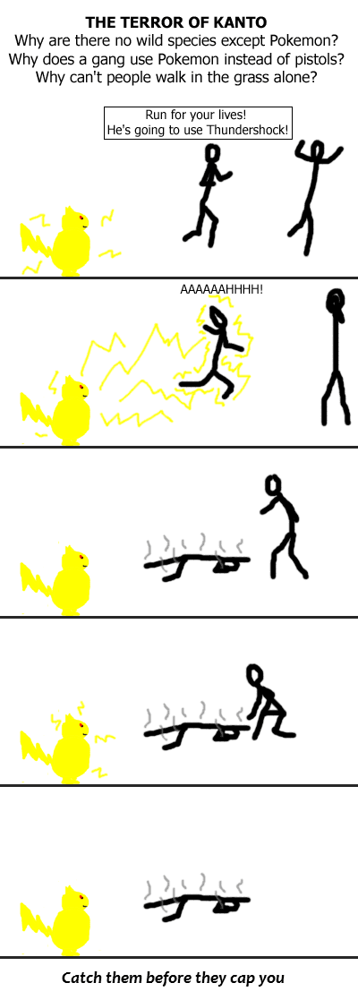

Comic JK 51
When I Feel Like It
⇤
<
?
>
⇥

⇤
<
?
>
⇥
Forum
.
RSS
.
Digg
.
Facebook
.
Reddit
.
Twitter
.
Stumbleupon
Your mother prefers Squirtle(ing) over Pikachu. Anyone notice how everyone eats steak in KANTO, It weirds me out... In pokemon, they must eat them. I mean, they must get their meat from somewhere.... >They get it from equestria, Pinkie Pie specifically. >>I'v always thought that too...but there's another problem... What about the vegitation? is that *more* pokemon (remember, grass pokemon) >>>Not everything is pokemon. You do have to walk through tall (non-pokemon) grass to even find pokemon, so there are some plants that aren't pokemon at least. >>>so the vegetarians in kanto eat meat? Supposedly Farfetch'd were almost eaten out of existence, just sayin' Maybe in the Pokemon Universe, guns, bows/arrows, and spears were never invented. Also, nobody every thought of using knives or clubs to kill. Hence, non-lethal Pokemon are a terrorists weapon of choice. Now, if team rocket discovered the AK-47, there would be a major shift in the balance of power! >Actually, there have been guns in the anime, though they tend to get taken out of the English dub. And Team Rocket's Mechas have been known to have rockets...that create nets. p[p][]p[ Yes...or....you know.... PG13 and shit?